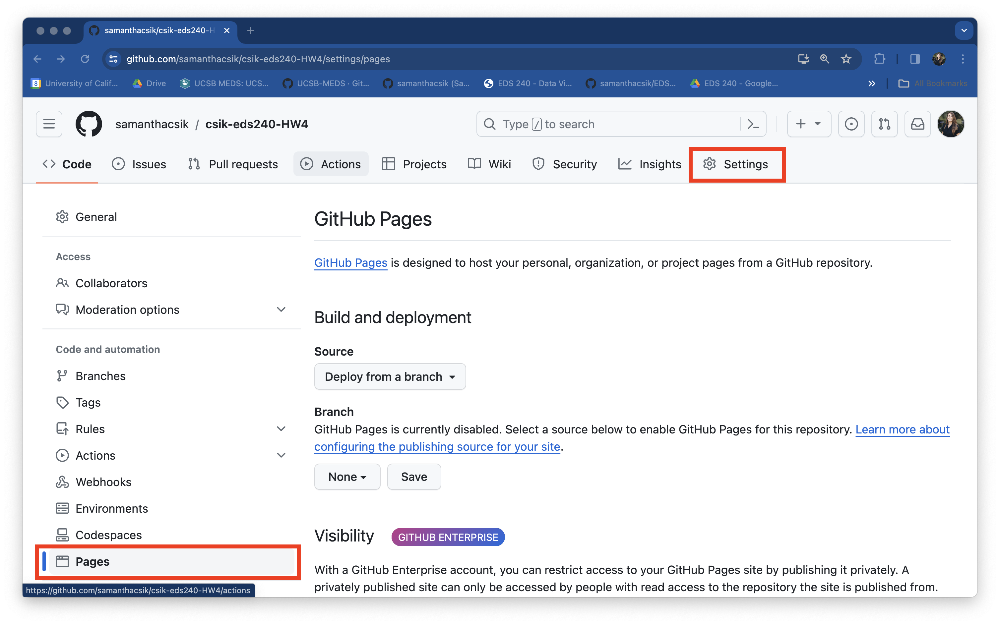

Learning Outcomes
Your final assignment is meant to combine all of the course learning outcomes(!):
- identify which types of visualizations are most appropriate for your data and your audience
- prepare (e.g. clean, explore, wrangle) data so that it’s appropriately formatted for building data visualizations
- build effective, responsible, accessible, and aesthetically-pleasing visualizations using the R programming language, and specifically
{ggplot2}+ ggplot2 extension packages - write code from scratch and read and adapt code written by others
- apply a DEI (Diversity, Equity & Inclusion) lens to the process of designing data visualizations
- assess, critique, and provide constructive feedback on data visualizations
Description
Choose to complete one of the two options below:
OPTION 1:
Build three separate visualizations – all three should feature the same data which are used to answer the same (single) question, but present those data differently for three different target audiences / purposes:
- a visualization for a general audience (i.e. without domain expertise) – this data visualization may be designed to prompt conversation, clearly display findings (without the use of jargon), display findings in an atypical but creative way, and / or may blend both art and science
- a visualization to be included in a paper, technical documentation, or report – this visualization should tell a similar story, but can include much more detail, more data, more domain-specific language, etc.
- a visualization that you could include in a presentation – presenting data on slides often requires a slightly different approach – we ask a lot of an audience (regardless of their familiarity with your domain) when we spend only ~60 sec on any given slide. It’s often imperative to build up your visualizations, slide-by-slide, adding data layers bit-by-bit. Oftentimes, you will only present a subset of data on any given figure. Key takeaways should be clearly highlighted. For this visualization, consider how you would layer on data and what arrows / annotations you’d potentially animate in to make your messaging clear.
We’ve seen a lots of amazing visualizations throughout the quarter. Be sure to take a look through past lectures, and definitely check out the resources page to see work from some of my favorite data viz creators. Here are just a few cool / helpful pieces to get the creative thoughts flowing:
The following examples fall into the first cateogry, above (for a general audience):
- The Rise of Craft Beer!, by Cédric Scherer (this is an awesome example of how a relatively simple graphic form (i.e. a bar chart) can be made into an engaging piece for a general audience)
- Seasonality of Bird Collisions in Chicago, by Jake Kaupp
- Ratings of Japanese Instant Shio Ramen, by Georgios Karamanis
- A is for Actrapid, Z is for Zyprexa, by Georgios Karamanis
- The Rise of Adobe Inc., by Nicola Rennie (Nicola also records all of her tidytuesday contributions using the
{camcorder} package))
These are two excellent examples of how you might adapt a publication-worthy visualization for an oral presentation (categories two and three, above):
- Alex Phillips’ Ten Tips for Presentations lecture features a visualization from Rougier et al. 2014
- SciFig’s Spectrum of Figure Creation (you’ll need to expand the Details drop-down)
OPTION 2:
Build a cohesive infographic-style visualization that includes at least three different, but complementary visualizations that work together to tell a complete story. You should have one overarching question with (at least) three sub-questions which are addressed using each of the component pieces of the infographic.
An infographic typically exists to address one overarching question or idea, and it’s subcomponents (e.g. visualizations, numbers, imagery) each help to tell part of the story (or in other words, help to answer sub-questions). While text is important in all visualizations, it can be particularly critical in weaving together all your infographic elements to successfully convey your story. The order and orientation in which your elements are positioned will also be essential for creating a visual hierarchy that successfully guides your readers. Packages like {patchwork} will likely be critical in stitching together the different elements of your infographic.
I encourage you to look back at past lecture materials and to check out the resources page to explore the works of some really cool data viz creators. Here are a just a few examples of infographic-style visualizations (created using {ggplot2} + extension packages) to get you thinking about the possibilities:
- UFO Sightings, by Dan Oehm
- Numbats, by Dan Oehm
- Haunted Places, by Dan Oehm
- School Diversity, by Cédric Scherer
- Allons-y to Gallifrey, by Aman Bhargava
Regardless of which option you choose, you are expected to consider all design elements discussed throughout the quarter, implement as appropriate, and justify your decisions! These include, but are not limited to:
- graphic form (you are not limited to just those fundamental chart types discussed in weeks 3 & 4 – explore other advanced chart types and don’t be afraid to get really creative with it; check out some of these awesome data viz creators to find inspiration)
- text (e.g. titles, captions, annotations, axis labels, axis ticks, alt text)
- themes (i.e. all non-data plot elements; these should be intentionally modified and visually-pleasing)
- colors
- typography
- general design (e.g. group order, spacing, text orientation, data-ink ratio, creating a visual hierarchy, avoiding information overload)
- contextualizing your data
- centering your primary message
- considering accessibility (e.g. colorblind-friendly palettes / contrast, alt text)
- applying a DEI lens to your design (e.g. considering the people / communities / places represented in your data, consider how you frame your questions / issue)
In addition to producing your visualizations, you are expected to follow clean and organized coding practices:
- follow the tidyverse style guide (important styles are outlined on the course website)
- organize and annotate code (see these recommendations from the course website)
- apply the appropriate code chunk options (e.g. in most (if not all) cases, code and outputs should be rendered but warnings and messages should not) – see the Quarto documentation on HTML Code Blocks and Execution Options for more
- (optional) you may consider applying the
code-foldoption, which can make scrolling past long code chunks easier
- (optional) you may consider applying the
You will also document your data design process and decisions in a short 1-2 page (~500-1,000 words) write up:
Your writing should:
- clearly state your question(s)
- describe your data (including your data source)
- address your approach and decisions for each of the ten design elements listed above (though you are welcome and encouraged to comment on any others that are not explicitly listed). If your visualizations do not include and / or consider a listed element(s), please comment on why (it’s possible that not all will be applicable to your visualizations, but be sure to say why that is the case).
You may submit your assignment in one of two ways:
- A published Quarto document that is deployed using GitHub Pages
Instructions for publishing a Quarto doc using GitHub Pages
- Your Quarto doc must be named
index.qmdand live in your repository’s root directory. Be sure to rename / move it, if necessary. - Head to your remote repository on GitHub. Navigate to the Settings page (top navbar), then select Pages from the left-hand menu. Once there, you should see something that looks like this:
- Under Build and deployment > Branch, update the drop down that says None to main. Leave the second drop down on /(root) (this tells GitHub to look for and deploy our
index.htmlfile from the root directory of the main branch). Click Save. Your URL will appear at the top of the page once it’s deployed (you will need to refresh the page – this could take a few minutes):


- As a blog post on your personal website – check out the Adding a blog to your existing Quarto website workshop materials for a refresher, if needed
Rubric (specifications)
You must complete the following to receive a “Satisfactory” mark for Assignment #4: